Data Viz, Sharing, Use
Module 2 - Data Exploration
Lecture 2.4
ASM 532, Introduction to Ag Informatics
Ankita Raturi, ankita@purdue.edu
Lecture Outline
- Quiz 2 walkthrough
- Why look at your data?
- Choosing a chart
- What makes a chart good?
- How sure can we be? The data behind Quiz 2
- AI-assisted debugging
- FAIR data, trust, and sensitivity
- Sharing: licenses and code
The Data Lifecycle - Share / Use
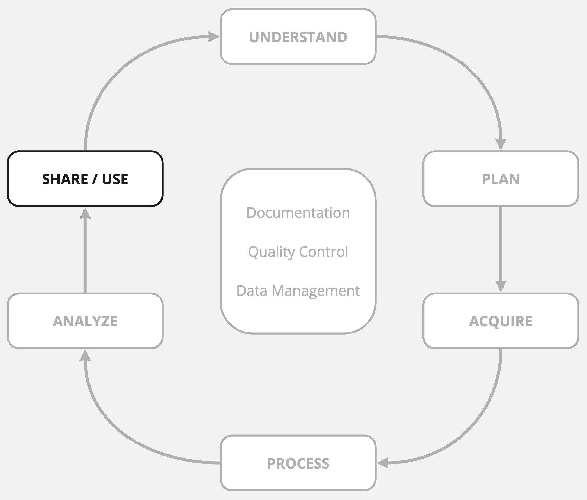
Quiz 2: Task
Produce a line chart of Indiana's average monthly temperature from January 1970 through December 2021 — one data point per month, time running along the x-axis.
-
1. Filter raw data
- R1 In plain English, describe the filtering logic you need
- R2 Translate R1 into Pandas code
-
2. Plot the data
- R3 Sketch a mock-up of your chart
- R4 Write the Matplotlib code
A DataFrame df holding Average Monthly Temperature by US State.
Each row is one state in one month of one year; the data covers 1950–2021.
Filter raw data R1 + R2
R1 - plain English (the pseudocode)
Keep only the rows where state equals "Indiana" and
year is greater than or equal to 1970 — that is, 1970 through 2021, all 12 months of
each year.
From those rows I will plot average_temp on the y-axis against
time on
the x-axis, where time comes from combining the year and month columns.
R2 - Pandas
Plot the data R3 + R4
R3 - grade on the presence of components
- Line chart form — a continuous line, not bars/scatter/pie
- Descriptive title (e.g. "Indiana Average Monthly Temperature, 1970–2021")
- X-axis has a label naming time (Year / Date / Month)
- X-axis shows plausible tick values (e.g. 1970, 1980, … 2020)
- Y-axis has a label naming temperature
- Y-axis label or ticks show units (°F) and a plausible range (roughly 15–80)
R4 - Matplotlib (OO style)
Plot the data R4, rendered
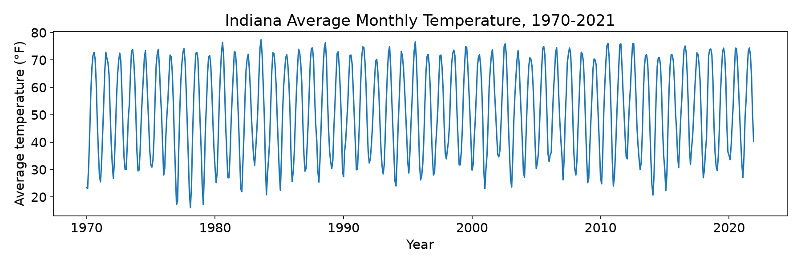
Data: Justin Wong, Average Monthly Temperature by US State, Kaggle, from NOAA NCEI Climate at a Glance. Plotted 1970-2021.
"The greatest value
of a picture
is when it forces us to notice
what we never expected to see."
John W. Tukey, Exploratory Data Analysis, 1977
The Datasaurus Dozen
One file: a dozen datasets, plus dino. 142 points each, just x
and y.
bullseye
| x | y |
|---|---|
| 51.2 | 83.3 |
| 59.0 | 85.5 |
| 51.9 | 85.8 |
| 48.2 | 85.0 |
| ... | ... |
star
| x | y |
|---|---|
| 58.2 | 91.9 |
| 58.2 | 92.2 |
| 58.7 | 90.3 |
| 57.3 | 89.9 |
| ... | ... |
circle
| x | y |
|---|---|
| 56.0 | 79.3 |
| 50.0 | 79.0 |
| 51.3 | 82.4 |
| 51.2 | 79.2 |
| ... | ... |
x_shape
| x | y |
|---|---|
| 38.3 | 92.5 |
| 35.8 | 94.1 |
| 32.8 | 88.5 |
| 33.7 | 88.6 |
| ... | ... |
...and away, dots, h_lines,
high_lines, slant_down, slant_up, v_lines,
wide_lines. And the thirteenth: dino.
Data: Matejka & Fitzmaurice, 2017, Same Stats, Different
Graphs.
Code: demos/demo-choosing-charts-notebook.ipynb, section 2.
Describe the data
| dataset | x mean | y mean | x sd | y sd | corr |
|---|---|---|---|---|---|
away |
54.27 | 47.83 | 16.77 | 26.94 | -0.06 |
bullseye |
54.27 | 47.83 | 16.77 | 26.94 | -0.07 |
circle |
54.27 | 47.84 | 16.76 | 26.93 | -0.07 |
dino |
54.26 | 47.83 | 16.77 | 26.94 | -0.06 |
dots |
54.26 | 47.84 | 16.77 | 26.93 | -0.06 |
h_lines |
54.26 | 47.83 | 16.77 | 26.94 | -0.06 |
high_lines |
54.27 | 47.84 | 16.77 | 26.94 | -0.07 |
slant_down |
54.27 | 47.84 | 16.77 | 26.94 | -0.07 |
slant_up |
54.27 | 47.83 | 16.77 | 26.94 | -0.07 |
star |
54.27 | 47.84 | 16.77 | 26.93 | -0.06 |
v_lines |
54.27 | 47.84 | 16.77 | 26.94 | -0.07 |
wide_lines |
54.27 | 47.83 | 16.77 | 26.94 | -0.07 |
x_shape |
54.26 | 47.84 | 16.77 | 26.93 | -0.07 |
Data: Matejka & Fitzmaurice, 2017, Same Stats, Different
Graphs.
Code: demos/demo-choosing-charts-notebook.ipynb, section 2.
Plot the data
Cairo says: “never trust summary statistics alone; always visualize your data.”
![A 3 by 5 grid of scatter plots sharing axes, one per Datasaurus dataset, with the last two panels empty. dino is a dinosaur outline; away is a scattered cloud; h_lines is five horizontal rows of points; v_lines is vertical columns; x_shape is a large X; star is a five-pointed star; high_lines is two horizontal bands; dots is a 3 by 3 grid of tight clusters; circle is an oval ring; bullseye is two concentric rings; slant_up and slant_down are parallel diagonal lines rising and falling; wide_lines is two vertical bands.](img/m2-datasaurus-scatter-grid.png)
Data: Matejka & Fitzmaurice, 2017, Same Stats, Different
Graphs.
Code: demos/demo-choosing-charts-notebook.ipynb, section 2.
The Value of Exploration


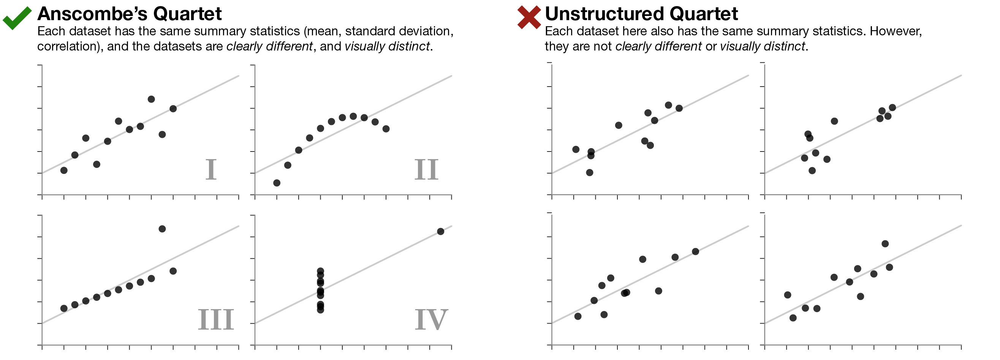
Matejka & Fitzmaurice, 2017, https://www.autodesk.com/research/publications/same-stats-different-graphs.
Cairo, 2016, http://www.thefunctionalart.com/2016/08/download-datasaurus-never-trust-summary.html
The Quiz dataset
Scope: spatial (state, centroids) and
temporal (year, month).
| Column | Type | |
|---|---|---|
state |
Qualitative | Nominal: order doesn't matter |
month |
Qualitative | Ordinal: order matters. Stored as 1-12, used as a group |
year |
Quantitative | Discrete, interval: date/time |
average_temp |
Quantitative | Continuous, interval: 0 °F is not "no temperature" |
monthly_mean_from_1901_to_2000 |
Quantitative | Continuous, interval |
centroid_lon, centroid_lat |
Quantitative | Continuous |
Viz Function: Data Type?
![The data-to-viz.com decision tree on its Num and Cat tab, one of six tabs: Numeric, Categoric, Num and Cat, Maps, Network, and Time series. Branches ask how many numeric and categorical variables there are, then whether there is one observation or several per group, and end in chart icons. One numeric and one categorical variable with several observations per group leads to a boxplot or a violin; other branches lead to lollipop, grouped scatter, 2D density, stacked area, heatmap, barplot, dendrogram, network and chord charts.](img/m2-graphs-datatoviz.png)
Same data, different questions
| Question | Data | Chart |
|---|---|---|
| How has Indiana's temperature changed since 1970? | 1 numeric, over time | Line (Quiz 2) |
| How does temperature vary by month? | 1 numeric, 1 ordinal, several per group | Box / violin |
| How are Indiana's monthly temperatures spread? | 1 numeric | Histogram / density |
| How does each month compare to its 1901-2000 mean? | 2 numeric | Scatter |
| Which states were warmest in 2021? | 1 numeric, 1 nominal, one per group | Ranked barplot |
| Where are the warmest states? | 1 numeric, spatial | Bubble map |
Must choose the right chart for the right question: highlight without hiding!
Q: Indiana temp variance across year?
![Two side-by-side charts titled Indiana, 1970-2021: 52 observations per month, sharing a y-axis of Average temperature in degrees F, with months 1 to 12 on each x-axis. Left, a box plot: boxes rise from about 29 degrees in January to about 73 in July and August and fall back to about 37 in December, with a few outlier circles below the January, February and March boxes. Right, a violin plot of the same data: the summer violins are short and compact, while the winter violins for January, February and March are tall with long, thin lower tails, showing the spread and skew that the box plot reduces to outlier points.](img/m2-quiz2-indiana-box-violin.png)
average_temp: one number. month: one ordinal category. 52 Januaries, 52
Februaries...: several observations per group.
Question: Which graph is better?
Violin shows shape: Jan-Mar have long, thin lower tails, i.e., few very cold months. Box plot shows as a few outlier circles.
Data: Justin Wong, Average Monthly Temperature by US State, Kaggle, from NOAA NCEI Climate at a Glance. Plotted 1970-2021.
Indiana's monthly temp spread? Histogram
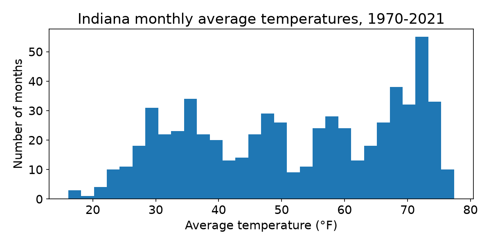
Not one bell: several humps. Each point is a month, and months cluster by season.
Data: Justin Wong, Average Monthly Temperature by US State, Kaggle, from NOAA NCEI Climate at a Glance.
Which states were warmest in 2021? Ranked bar
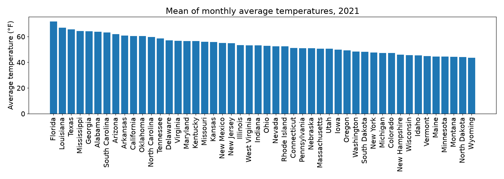
Florida (71.8 °F), Louisiana, Texas. Coolest: Wyoming (43.5 °F).
Indiana? In the middle, 24th of 48.
Data: Justin Wong, Average Monthly Temperature by US State, Kaggle, from NOAA NCEI Climate at a Glance.
Where are the warmest states? Bubble map
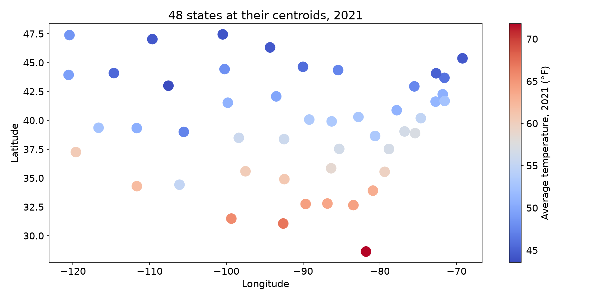
The south. In 2021, temperature follows latitude (correlation -0.95), not longitude (0.10).
Data: Justin Wong, Average Monthly Temperature by US State, Kaggle, from NOAA NCEI Climate at a Glance.
Viz Function: Data structure?
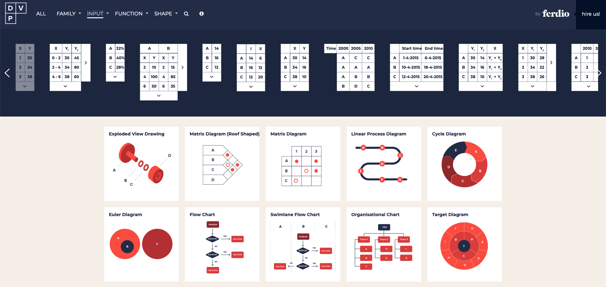
Viz Function: What to Highlight?
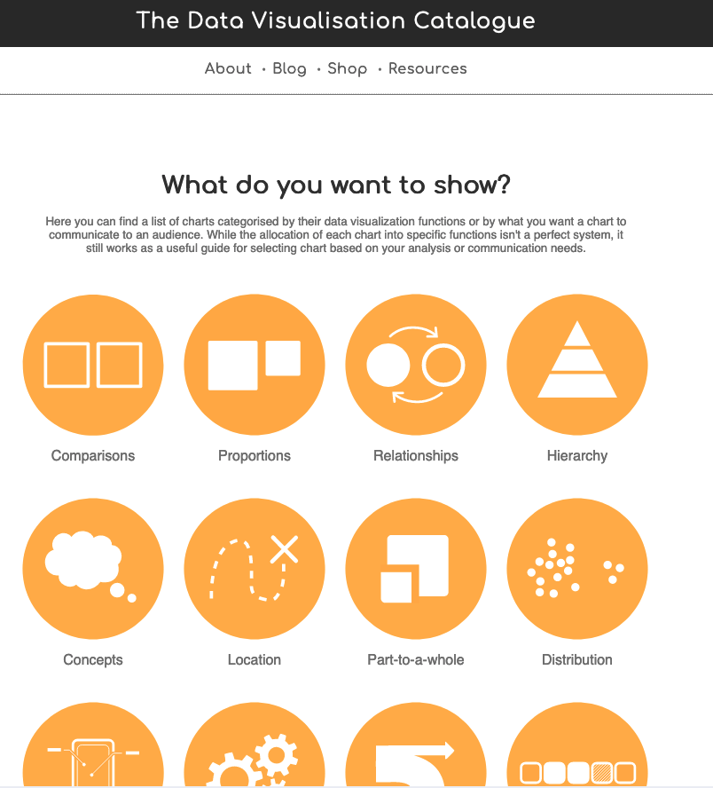
Python Possibilities
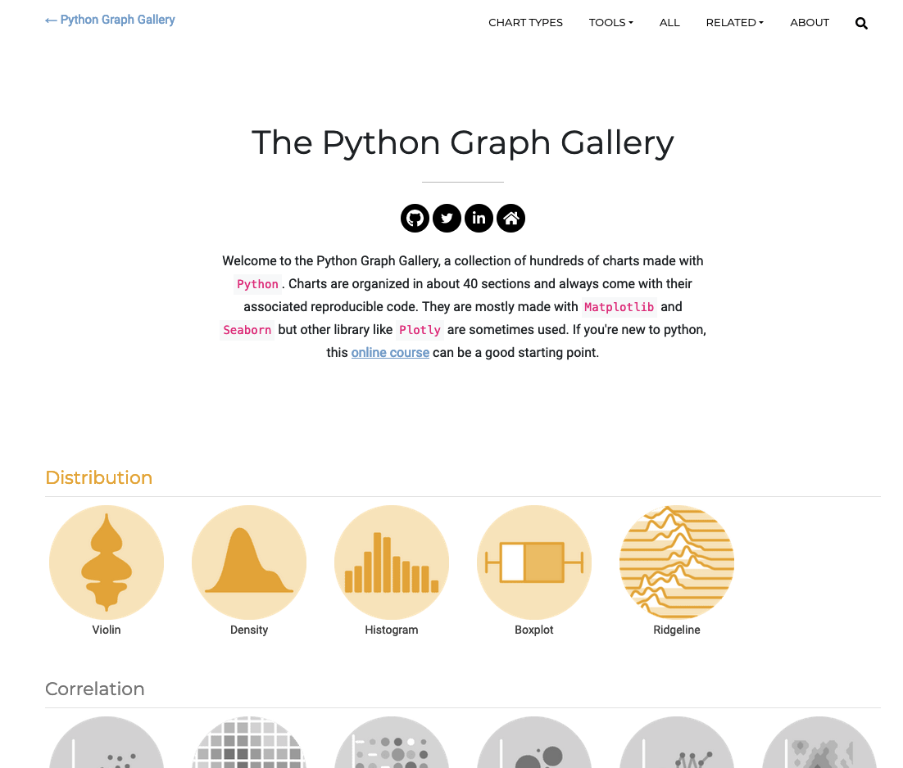
Python Plotting Libraries
| Matplotlib | Utility plotting library. |
| SeaBorn | 'Prettier' matplotlib. |
| Plotnine | ggplot2 style grammar. |
| Bokeh | Interactive visualizations. |
| Geopandas & Geoplot | Maps maps maps. |
Good Data Visualizations are...
- Truthful: Evidence based.
- Functional: Useful!
- Beautiful: Aesthetic & User-centered.
- Insightful: Reveals things that are hard to see.
- Enlightening: The path to knowledge.
Alberto Cairo, 2016, A Truthful Art.
Example: Breakfast Plots
![Before and after of the same bar chart, Attendee Breakfast Preferences. Left: a default 3D chart with gridlines, a border, tick marks, a legend, and a different colour for every bar. Right: the redesign, sorted largest to smallest from Eggs at 23% and Just a pile of bacon at 21% down to Fruit salad at 8%, with a headline title reading Breakfast preferences focus on protein, a subtitle, data labels on each bar, and a single teal action colour on Don't eat breakfast, 10%. Arrows name each chart element.](img/m2-graphs-beaut.png)
Quiz 2's R3 graded exactly these: a title, axis labels, units, plausible ticks.
Green & Emery, 2015, Data Visualization Checklist https://stephanieevergreen.com/data-visualization-checklist/
Example: World Food Supply
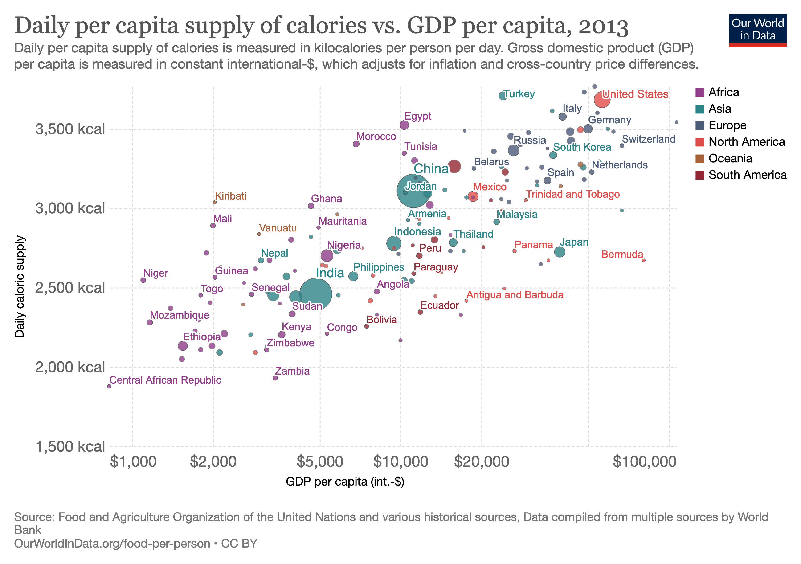
Roser & Ritchie. https://ourworldindata.org/food-supply#the-link-between-food-supply-and-prosperity
Example: IPCC Climate Data Viz
![IPCC AR6 Working Group I Figure SPM.1, headed Human influence has warmed the climate at a rate that is unprecedented in at least the last 2000 years: changes in global surface temperature relative to 1850-1900. Panel (a), decadal averages: the grey reconstructed line from year 1 to 2000 stays between about -0.5 and 0.5 degrees C, then the black observed line from 1850 to 2020 rises steeply past 1 degree, annotated Warming is unprecedented in more than 2000 years; a bar at left marks the warmest multi-century period in more than 100,000 years at 0.2 to 1.0 degrees. Panel (b), annual averages 1850-2020: the black observed line rises to about 1.2 degrees, tracking the brown simulation using human and natural factors, while the green natural-only simulation stays near zero. Below, the figure caption describing both panels.](img/m2-ipcc-spm1-figure.png)
![CEDA Archive dataset page: Summary for Policymakers of the Working Group I Contribution to the IPCC Sixth Assessment Report - data for Figure SPM.1 (v20210809). Buttons read Permitted Use: Any, Open Access, Download, and See Related Documents. A side panel lists Update Frequency Not Planned, Latest Data Update 2021-08-06, Status Completed, Online Status ONLINE, Publication State Published, Publication Date 2021-08-09, Dataset Size 7 Files, 65KB, and Citations: 7. An orange banner reads This dataset has been superseded. See Latest Version here. The abstract begins Data for Figure SPM.1 from the Summary for Policymakers, and the Coverage panel gives a temporal range from 0001-01-01 to 2019-12-31.](img/m2-ipcc-spm1-data-ceda.png)
IPCC Summary for Policy Makers IPCC AR6WGI, https://www.ipcc.ch/report/ar6/wg1/downloads/report/IPCC_AR6_WGI_SPM.pdf; data: CEDA Archive.
Evaluate our Quiz Data + Viz
Truthful? Functional? Beautiful? Insightful? Enlightening?
- 52 years × 12 months: mostly the seasons
- The data contains:
monthly_mean_from_1901_to_2000 - Question: Is Indiana hotter?
- Answer: Unclear! The seasons mask it.
Data: Justin Wong, Average Monthly Temperature by US State, Kaggle, from NOAA NCEI Climate at a Glance. Plotted 1970-2021.
Is Indiana hotter?
![Two stacked line charts titled Indiana, 1970-2021, sharing a Year axis. Top, Average monthly temperature (the quiz chart): a regular seasonal zigzag between about 20 and 77 degrees F. Bottom, Difference from that month's 1901-2000 mean: each month drawn as a thin grey line scattered between about -12 and +11 degrees around a black zero line, with a thick red 12-month rolling mean running mostly below zero in the late 1970s and mostly above zero after the late 1990s, peaking near +4 degrees around 2012 and 2017.](img/m2-quiz2-indiana-anomaly.png)
Yes. Months averaged 0.5 °F below their 1901-2000 mean in the 1970s, and 1.35 °F
above it in the 2010s.
But: Visualization is correct for this file. Is the data + data source correct?
Data: Justin Wong, Average Monthly Temperature by US State, Kaggle, from NOAA NCEI Climate at a Glance. Plotted 1970-2021.
A clue that something's off:
the 1901-2000 means
Each month has a "1901-2000 mean": that month's average over the whole 20th century. It should be one fixed number per month.
A mean over 1901-2000 is one number per month. Why two?
Something in how the file was made. Go to the source.
Where did this data come from?
Clues about accuracy and provenance:
Kaggle data is a copy. Cites
NOAA's
Climate at a Glance, with no license.
![Kaggle data card for Average Monthly Temperature by US State, by Justin Wong, updated 4 years ago. About Dataset: Includes Average Temperature of US States from Jan 1950 - Aug 2022. Source: https://www.ncei.noaa.gov/cag/statewide/mapping/110/tavg/202208/1/value. References: NOAA National Centers for Environmental information, Climate at a Glance: Statewide Mapping, Average Temperature, published September 2022, retrieved on October 8, 2022 from https://www.ncdc.noaa.gov/cag/. The sidebar reads Usability 3.53, License Unknown, Expected update frequency Not specified.](img/m2-kaggle-data-card.png)
Screenshot: Justin Wong, Average Monthly Temperature by US State, Kaggle, 2026-09-16.
What travelled with it?
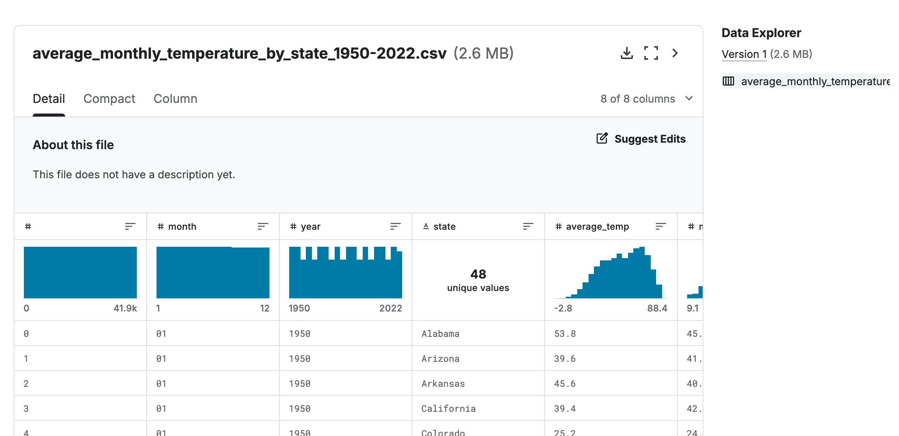
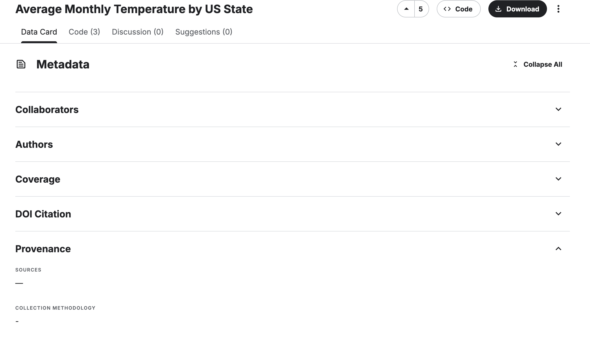
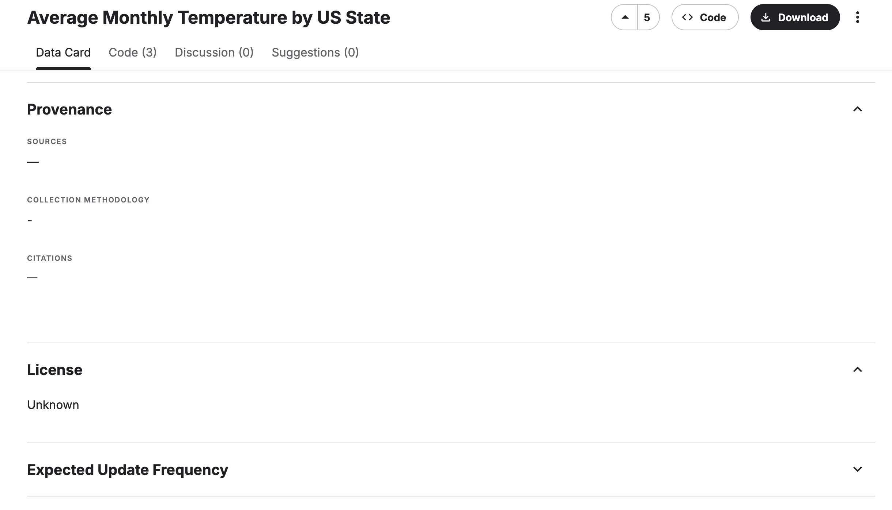
The file says "monthly". Nothing says how the months were computed.
Screenshot: Justin Wong, Average Monthly Temperature by US State, Kaggle, 2026-09-16.
How far did the copy travel?
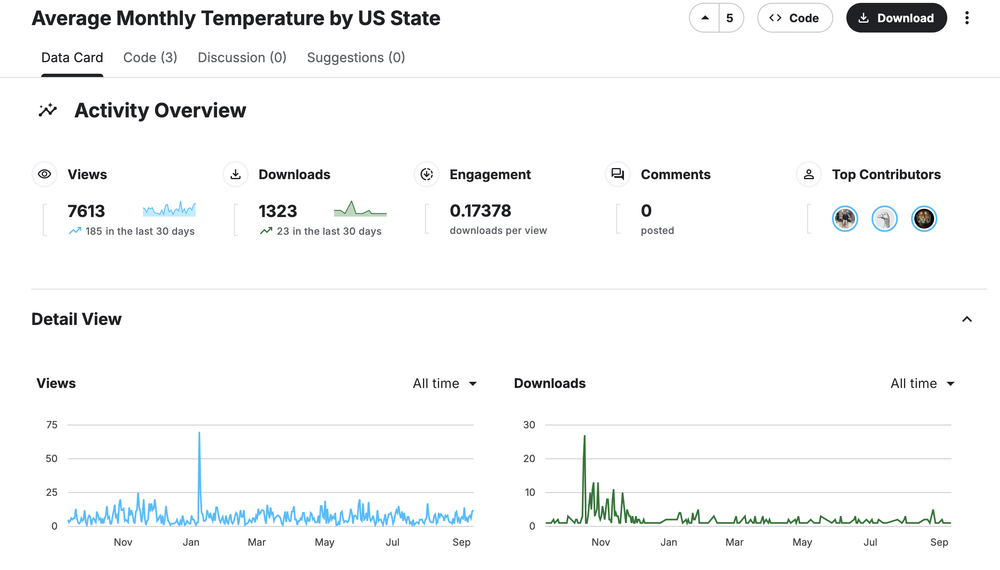
1,323 downloads. Every one inherits whatever is missing.
Screenshot: Justin Wong, Average Monthly Temperature by US State, Kaggle, 2026-09-16.
NOAA data source
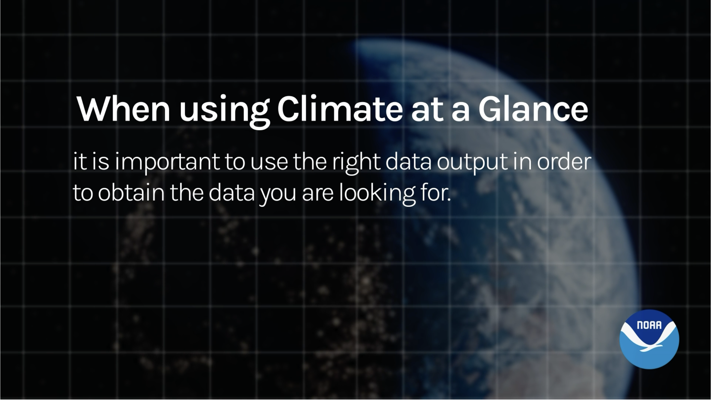
![Paragraph from the Climate at a Glance home page: Because these data are primarily intended for the study of climate variability, observations have been adjusted to account for the artificial effects introduced into the climate record by factors such as instrument changes, station relocation, observer practice changes and urbanization. Some of the more current data provided by Climate at a Glance are preliminary and may be modified after appropriate quality control has been performed. As a result, some values may differ from official observations.](img/m2-noaa-cag-home-us-background.png)
NOAA adjusts and revises: expect small differences from a 2022 copy and consider how you process/visualize.
Climate at a Glance: Data Outputs (video), NOAA NCEI; Climate at a Glance, NOAA NCEI, 2026-09-16.
Kaggle data citation?
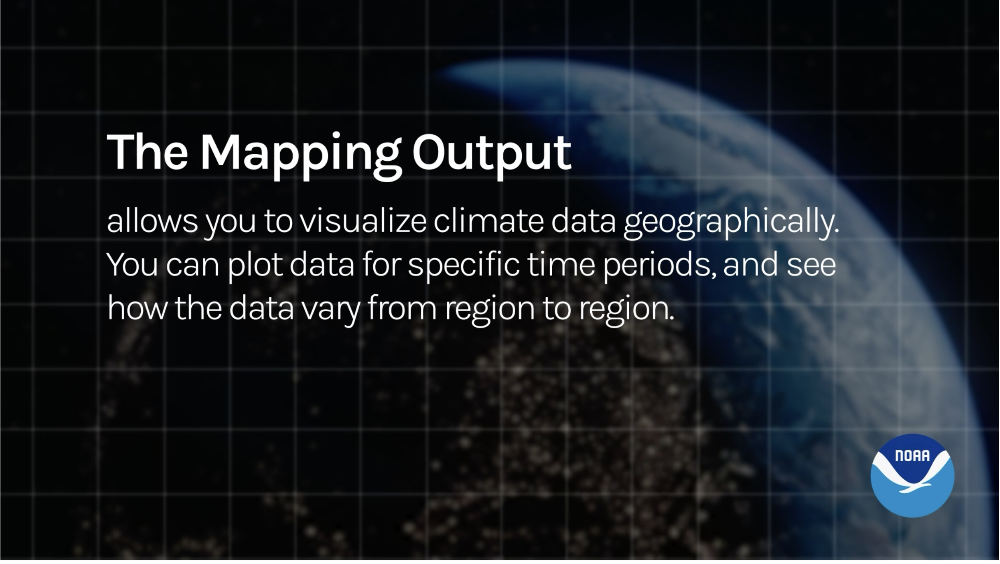
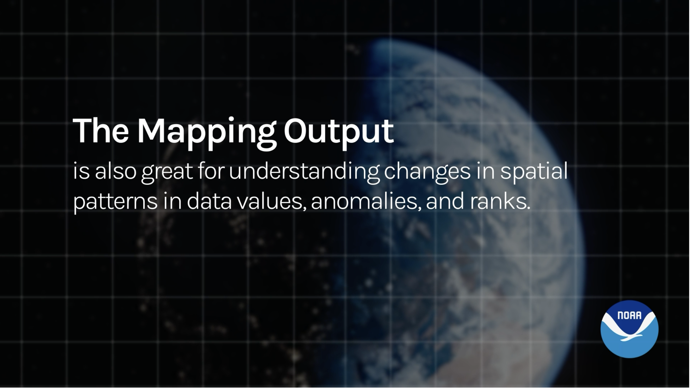
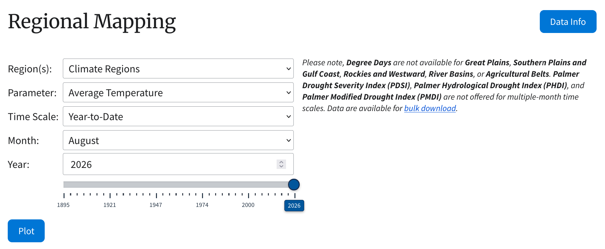
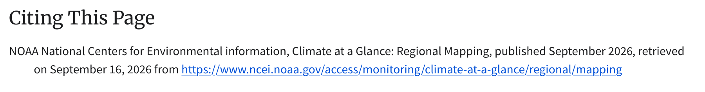
NOAA's citation names the page and the date, not any settings. Kaggle's reference is correct, BUT the URL returns a one-month map, not 72 years of months.
Climate at a Glance: Data Outputs (video), NOAA NCEI; Climate at a Glance: Regional Mapping, NOAA NCEI, 2026-09-16.
Data for a timeseries?
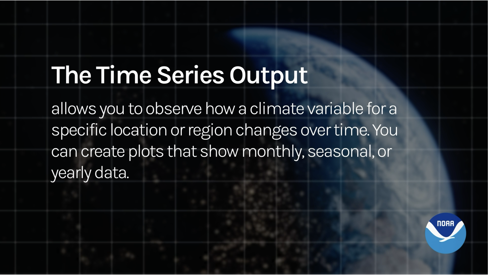
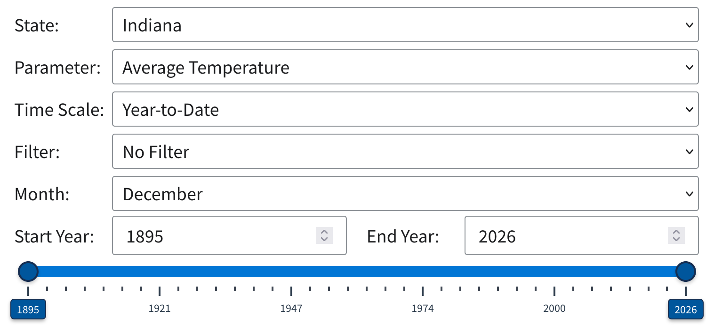
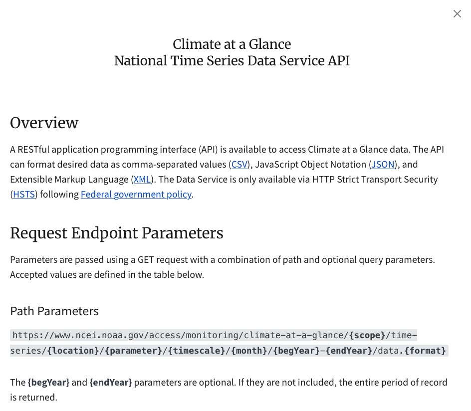
Time Scale is a setting: 1-month, 2-month, year-to-date... It's in the form and in the API path. It's nowhere in the Kaggle file.
Climate at a Glance: Data Outputs (video), NOAA NCEI; Climate at a Glance: Statewide Time Series, NOAA NCEI, 2026-09-16.
What's in the two datasets?
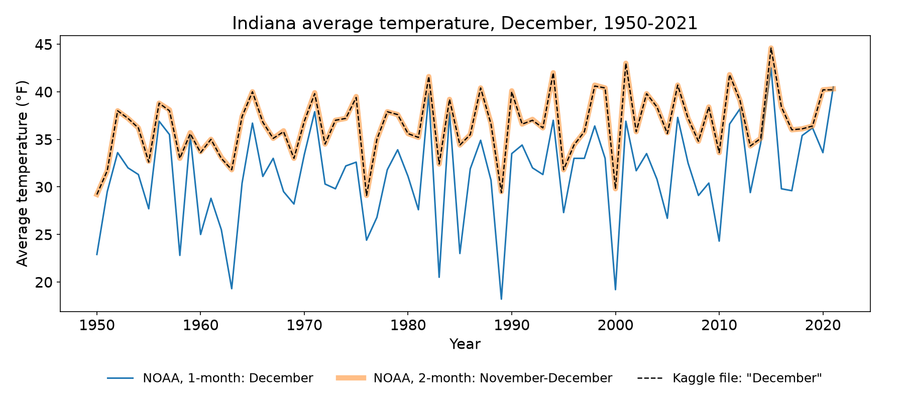
Kaggle's "December" is NOAA's 2-month November-December average: within 0.1 °F in all 72 years, and every other month matches its 2-month series too. Against true December, it's off by up to 12.5 °F.
Kaggle's December 1901-2000 mean: 35.6-35.7 °F. NOAA's: 30.3 °F.
Data: NOAA NCEI Climate at a Glance: Statewide Time Series, Indiana, Average Temperature, 1-month (December) and 2-month (November-December), 1950-2021, and Statewide Mapping, December 2022, retrieved 2026-09-16; Justin Wong, Kaggle.
Implications
Still true
- Indiana is warming
- Winter varies more than summer
- The histogram's humps are seasons
- 2021's warmest states, and the latitude pattern
Not quite
- "Monthly": each month is that month plus the one before
- "January" includes December
- The "1901-2000 means" are 2-month normals
- The 0.1 °F diff: likely rounding error
The charts were correct for the data file. The data file wasn't "correct".
The right tool: NOAA's Haywood plot
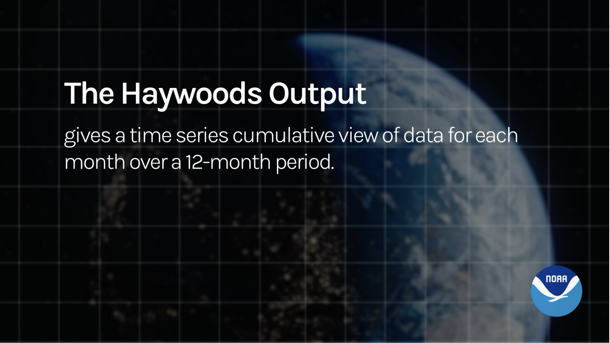
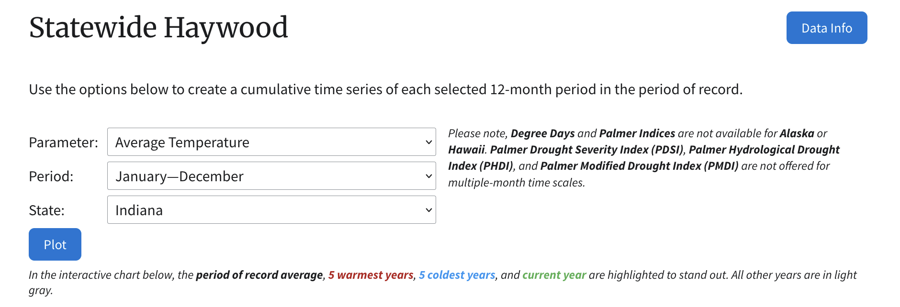
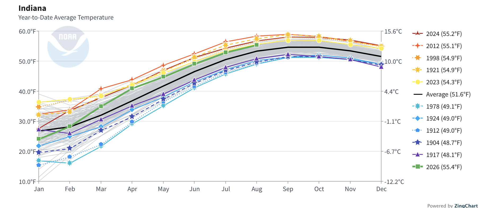
Is Indiana hotter? Three of the five warmest years are since 2012. The source's own chart, with its settings on the page.
NOAA NCEI, Climate at a Glance: Statewide Haywood (Indiana, Average Temperature, January-December), retrieved 2026-09-16, https://www.ncei.noaa.gov/access/monitoring/climate-at-a-glance/statewide/haywood
AI-assisted debugging
Human evaluation. AI data crunching. Data source verification.
| Step | Who | |
|---|---|---|
| 0 | Data exploration: Producing a TON of simple charts all on the same data. | Instructor prompting based on course materials. |
| 1 | Noticed: the "1901-2000 mean" should be one number per month. It had two (January: 28.5 and 28.4). First guess: rounding. | AI reports results. |
| 2 | Verified: downloaded NOAA's own data. The download settings were not recorded on Kaggle. | Instructor |
| 3 | Compared: December normal is 35.7 °F in Kaggle, 30.3 °F at NOAA. Too big for rounding. | AI report, Instructor assess |
| 4 | Hypothesis: each Kaggle "month" is a 2-month average. | AI propose, Instructor assess |
| 5 | Tested against NOAA: 2-month matches within 0.1 °F every year; 1-month is off by up to 14.5 °F. | AI reports to Instructor |
| 6 | Checked more: Alabama and Wyoming match too. | AI reports to Instructor |
| 7 | Review, verify, think, share! | Instructor, with AI-assist |
Claude Code session, 2026-09-16.
FAIR DATA
![The FAIR guiding principles as four bulleted lists. Findability: data and metadata get a globally unique, persistent identifier, rich metadata, and are indexed in a searchable resource. Accessibility: retrievable by that identifier over an open, free protocol, with metadata kept even when the data are gone. Interoperability: a formal, shared language for knowledge representation, FAIR vocabularies, and qualified references to other data. Reusability: richly described, with a clear usage license, detailed provenance, and domain community standards.](img/m2-data-fair.png)
Data FAIRification process
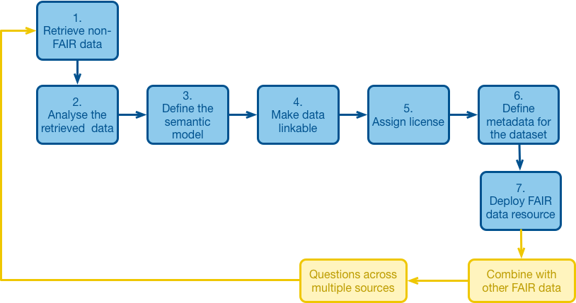
https://www.go-fair.org/fair-principles/fairification-process/
Trust Issues!
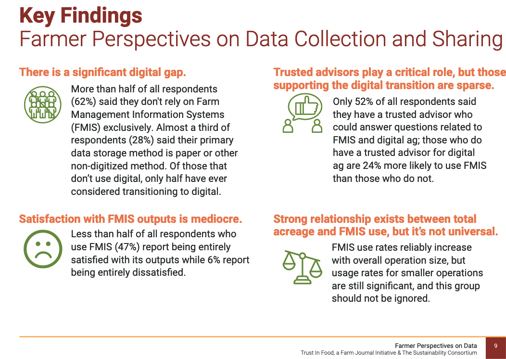
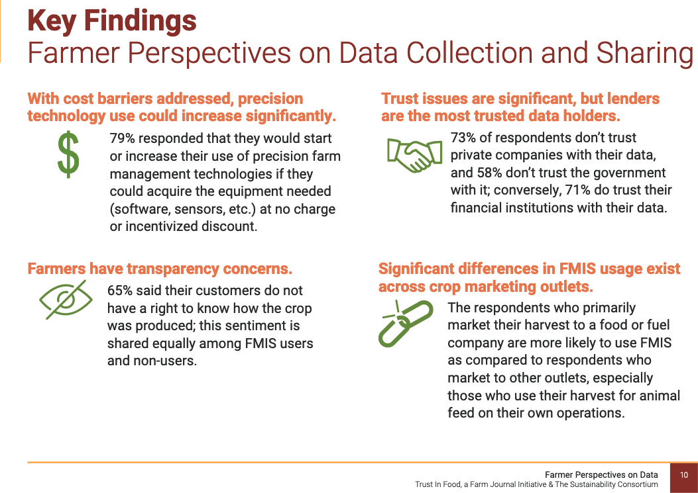
Slattery et al., 2021, https://www.trustinfood.com/wp-content/uploads/2021/05/Farmer-Perspectives-on-Data-2021.pdf
Practicing Trust with Data
Privacy
- Protect personal information
- Handle geolocation information with sensitivity
- Provide granular data access controls
Agency
- Come to early consensus on data ownership
- Provide situational control over data
- Empower stakeholder voices
Raturi et al., Forthcoming (2021), "Cultivating Trust in Technology-Mediated Sustainable Agricultural Research".
Cultivate Trust in your Process
Transparency
- Be inclusive of stakeholders in the process
- Provide feedback and clarity on the process
- Open source development of tools
- Open access to privacy-preserved data
Accountability
- Uphold the responsibility of protecting data and research stakeholder rights
- Provide traceability of action
- Provide feedback among stakeholders
Raturi et al., Forthcoming (2021), "Cultivating Trust in Technology-Mediated Sustainable Agricultural Research".
Precision Sustainable Agriculture
Managing access to cover crop research data from US farms.
![Precision Sustainable Agriculture's data sensitivity table, running from Not Sensitive on the left to Very Sensitive on the right. On-farm field observations, measurements and sensor data are not subject to IRB and sit in Database 1 with broad team access. Personal information and GPS locations are Sensitive, also in Database 1, with modelers limited to reading GPS locations. Human-subject data is subject to IRB: anonymized, aggregated data goes in Database 2 for social scientists and economists, and personally identifiable information in Database 3, open only to researchers named on the IRB.](img/m2-psa-datasensitivity.png)
Raturi et al., Forthcoming (2021), "Cultivating Trust in Technology-Mediated Sustainable Agricultural Research".
Sensitivity of Data
- Private: Some Farmer Data, Proprietary Data, Human Subjects Research Data
- Protected: Same as above, but can be released in certain ways (e.g., de-identified, aggregated, shared with certain people)
- Public: Publicly funded research data, "Generic" data e.g., general plant data, "utility" data e.g., weather, can also include protected data e.g., deidentified data.
The Open Data Ecosystem
Publish data* on the web.
*with appropriate permissions/protections
Re-usable Media/Writing/Courses!
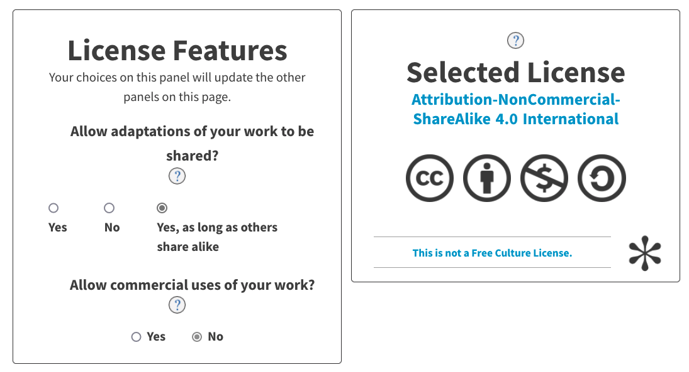
Open Source Software Code
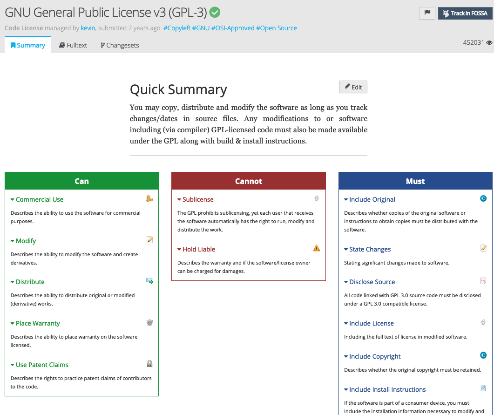
Learn More:
License
-

Introduction to Agricultural Informatics Course by Ankita Raturi, Purdue University is licensed under a Creative Commons Attribution-NonCommercial-ShareAlike 4.0 International License.
- You are free to:
- Share — copy and redistribute the material in any medium or format
- Adapt — remix, transform, and build upon the material
- Under the following terms:
- Attribution — You must give appropriate credit, provide a link to the license, and indicate if changes were made. You may do so in any reasonable manner, but not in any way that suggests the licensor endorses you or your use.
- NonCommercial — You may not use the material for commercial purposes.
- ShareAlike — If you remix, transform, or build upon the material, you must distribute your contributions under the same license as the original.
- No additional restrictions — You may not apply legal terms or technological measures that legally restrict others from doing anything the license permits.